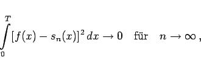
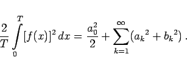

Inhalt Index DeskTop Bronstein

 Unendliche Reihen Fourier-Reihen Trigonometrische Summe und Fourier-Reihe Wichtigste Eigenschaften von Fourier-Reihen
Unendliche Reihen Fourier-Reihen Trigonometrische Summe und Fourier-Reihe Wichtigste Eigenschaften von Fourier-Reihen


Die FOURIER-Reihe konvergiert im Mittel gegen die gegebene Funktion, d.h., es gilt
|  | (7.99a) |
wenn die Funktion beschränkt und im Intervall 0 < x < T stückweise stetig ist. Eine Folge der Konvergenz im Mittel ist die PARSEVALsche Gleichung:
|  | (7.99b) |